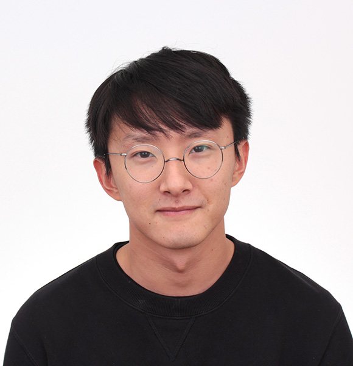
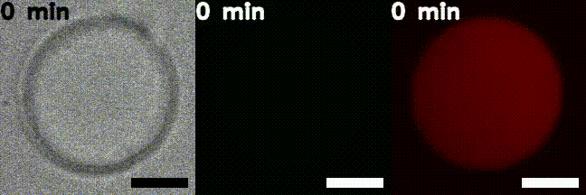
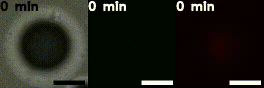
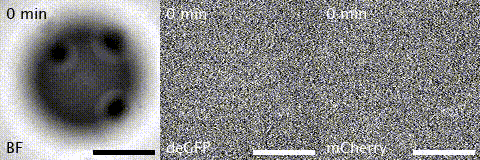

Shuzo Kato / 加藤 修三
Ph.D. student
Cluster of Excellence Physics of Life (PoL), TU Dresden / Max Planck Institute of Molecular Cell Biology and Genetics
shuzo.kato*tu-dresden.de
Google Scholar
About
I am a PhD student in the group of Jan Brugués at Cluster of Excellence Physics of Life, TU Dresden.
I wonder how life emerges and acquires its functions from collective interactions. After wandering at the intersection of engineering, physics and biology,
I found my passion in exploring physical principles in living systems with interdisciplinary approaches.
I use soft matter physics and cell-free synthetic biology to understand the physical rules behind biological self-organization.
Currently, my research focuses on energetics, dynamics and scaling of mitotic spindle with cell-free and embryo systems.
Previously, I worked with Yusuke Maeda to investigate the interplay of phase separation and gene expression using cell-free bacterial lysate.
[Full CV]
Education
- TU Dresden (Oct. 2023 - Present)
- Ph.D. student (Supervisor: Prof. Jan Brugués)
- Kyushu University (Apr. 2020 - Sep. 2023)
- M.Sc. in Physics (2022)
- MSc thesis: “Liquid-liquid phase separation and
gene expression regulation in synthetic cells” (Supervisor: Prof. Yusuke T. Maeda)
- Keio University (Apr. 2015 - Mar. 2020)
- B.Eng. in Mechanical Engineering
- BEng thesis: “Adsorption dynamics of pyruvic acids on struvite mineral surface: molecular
dynamics study"
(Supervisor: Prof. Kenji Yasuoka)
- TU Munich (Oct. 2018 - Aug. 2019)
- Exchange study in Physics
Other Research Experiences
- RIKEN Center for Biosystems Dynamics Research (BDR) (Sep. - Nov. 2021)
- Research assistant / Visiting student (Supervisor: Dr. Kyogo Kawaguchi)
- Quantitative imaging on intranuclear condensation
Publication (Peer-reviewed)
- S. Kato, A. Negi, V. Noireaux, Y. T. Maeda, "Wetting-Mediated Remodeling of the Cytoskeletal Cortex by Phase-Separated Condensates in Cell-Free Reactions". Biomacromolecules
27,
297–308
(2026).
[Link].
- S. Kato, D. Garenne, V. Noireaux, Y. T. Maeda, "Phase Separation and
Protein
Partitioning in Compartmentalized Cell-Free Expression Reactions". Biomacromolecules
22,
3451-3459
(2021).
[Link].
Fellowships & Grants
- JASSO Graduate Scholarship, Japan Student Services Organization (2024-2027)
- JSPS Research Fellowship DC1, Japan Society for the Promotion of Science (2022-2023)
Awards
- Student Presentation Award, The Physical Society of Japan 2022 (77th) Annual Meeting (2022)
- Student Presentation Award, The 59th annual meeting of the Biophysical Society of Japan (2021)
- Fujiwara Award, Faculty of Science and Technology, Keio University (2020)
Talks
- Shuzo Kato, Xingbo Yang, Jan Brugues, “Energetic constraints on mitotic spindle organization: from dynamics to scaling”, Physics of the Early Embryonic Cell Divisions, Sussex, UK, Nov. 2024.
- Shuzo Kato, David Garenne, Vincent Noireaux and Yusuke T. Maeda, “The dynamics of droplet coarsening in
confined cell-free expression reactions”, STATPHYS28, Tokyo, Japan, Aug. 2023.
Outreach
- Mentor, XPLANE Essay support program 2023-2025 (Japanese student organization for studying abroad)
- Staff, The 63rd Summer School of the Young Researchers' Society for Biophysics (第63回生物物理若手の会夏の学校)
- Library Teaching Assistant, Kyushu University Library
- "細胞を こわす・つくる・理解する ~生命現象の物理学~ (Break, Build, and Understand Cells: The Physics of Life)" [PDF]
- Maintainer, soft/living matter fanclub (@softlivmat_fc)
Misc.
- 加藤修三, “若手の会だより~ 生命の理を求めて: 生物物理の学際をゆく~”, 生物物理 64 (2), 114-115 (2024).
Galleries
- Wetting induced remodeling of the cytoskeletal assembly in synthetic compartments (from Pub. 1)


- Gene expression and phase separation in synthetic cells (from Pub. 2)
